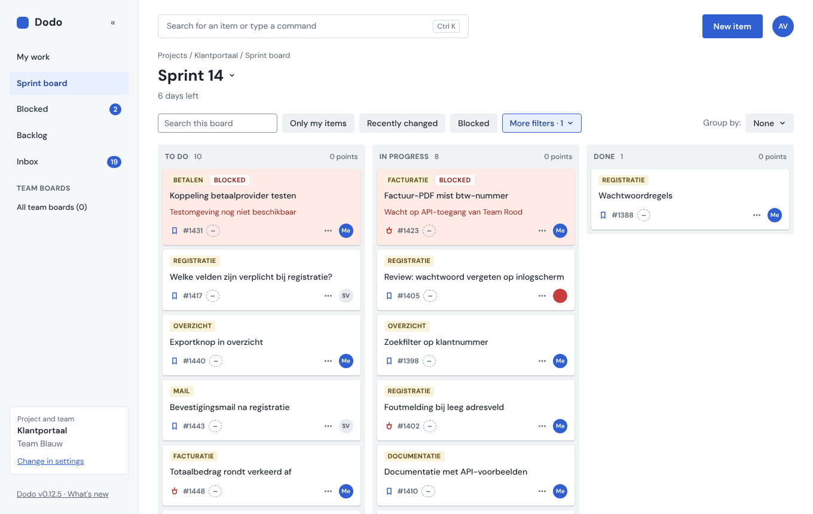
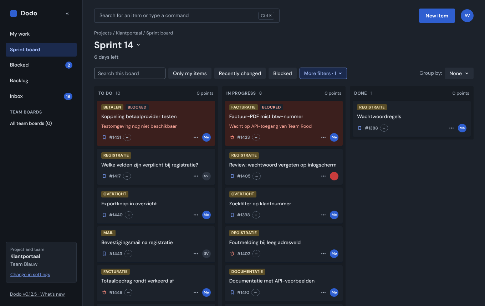
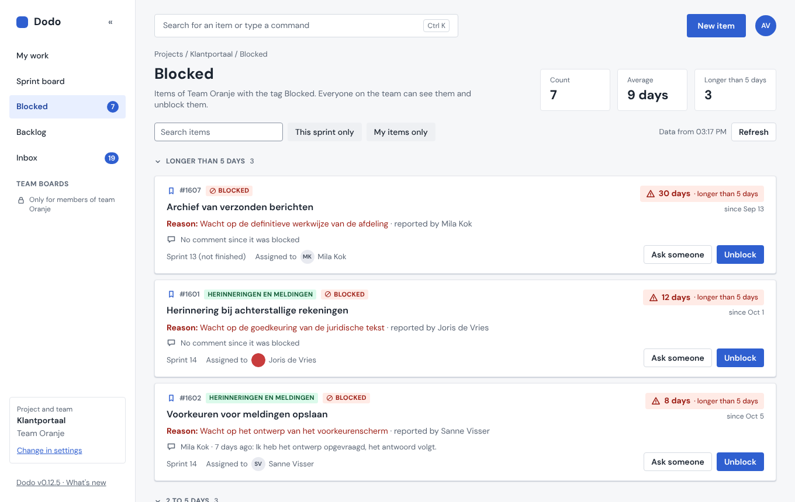
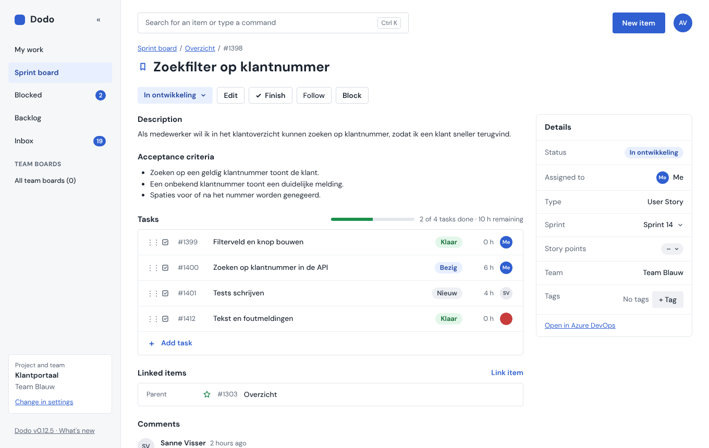
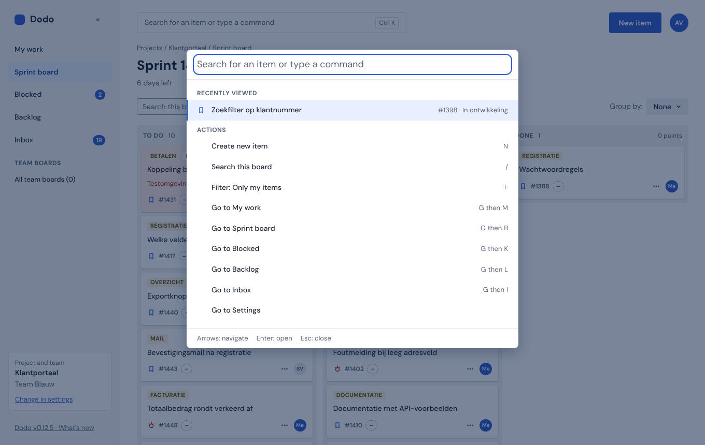
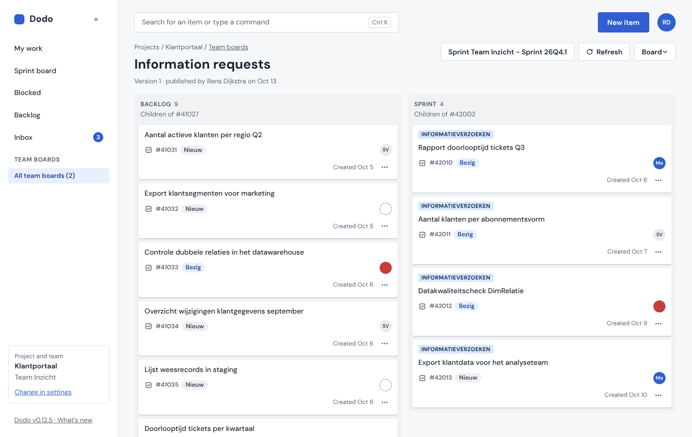

Azure DevOps,
zonder gedoe.
Dodo is een rustige werklaag bovenop de Azure DevOps REST API. Dezelfde werkitems, met op elk scherm één vraag. Je draait hem zelf, en je gegevens blijven in Azure DevOps.
Status: nog vóór 1.0. Dodo wordt fase voor fase gebouwd en dagelijks gebruikt, maar er verandert nog van alles tussen versies. Lees de release notes voor je updatet.
$ git clone https://github.com/StanNieuwmans/Dodo && cd Dodo && docker compose up -d
Eén commando, alleen Docker nodig. Open daarna localhost:3000 en log in met een persoonlijk toegangstoken.
Schermafbeeldingen






Schermafbeeldingen van Dodo met de nep-Azure DevOps die erbij zit. De items zijn voorbeeldgegevens. De interface is hier Engels, omdat de afbeeldingen in het Engels zijn gemaakt.
Geen vervanger. Een rustigere voordeur.
Azure DevOps heeft alles wat een team nodig heeft, maar toont te veel tegelijk. Dodo leest en schrijft dezelfde werkitems via de REST API en laat alleen zien wat er nu voor jou toe doet.
Rustig ontworpen
Elk scherm beantwoordt één vraag. Optionele dingen staan ingeklapt, en wat je niet kunt gebruiken blijft zichtbaar met de reden in tekst.
Azure DevOps blijft de bron
Er verhuist geen data. Dodo werkt met het proces van je eigen team: statuscategorieën in plaats van vaste statusnamen, en types rechtstreeks uit de API.
Bevestigen voor wijzigen
Bulkverplaatsingen, de assistent en regels van teamborden laten eerst zien wat er verandert voordat er iets wordt geschreven. Lichte acties krijgen Ongedaan maken.
Toetsenbord en schermlezer
Gebouwd naar WCAG 2.2 AA. Alles werkt met het toetsenbord, slepen van kaarten inbegrepen: Spatie pakt een kaart op, de pijltjestoetsen verplaatsen hem.
Alles wat een sprint nodig heeft, niets meer
Twaalf fasen verder dekt Dodo het dagelijkse werk van een Scrumteam, van je eigen lijst tot de werkwijze van het team.
Mijn werk
Je items, de items die je volgt en je nieuwste meldingen op één pagina. Jij kiest welke blokken je ziet.
Een live sprint-board
To do, Bezig en Klaar op statuscategorie, storypunten per kolom, en stille updates elke 30 seconden zolang het tabblad openstaat.
Items die je echt kunt lezen
Eén pagina per item met details, taken, koppelingen, bijlagen, reacties met @-vermeldingen en gekoppelde pull requests. Bewerken, afronden of verwijderen in één keer.
Geblokkeerd in één oogopslag
Alle geblokkeerde items van je team, gegroepeerd op hoe lang ze al vastzitten. Vraag iemand om hulp of deblokkeer met een notitie, direct vanaf de kaart.
Teamborden
Bouw een bord voor één werkwijze, zoals intake of bugtriage, met regels voor wat slepen doet. Elke publicatie is een versie die je kunt terugzetten.
Zoekvenster en sneltoetsen
Met Ctrl K vind je elk item op titel of #nummer en voer je elke actie uit. G en dan B opent het bord, N maakt een nieuw item, ? toont de rest.
Een assistent die eerst vraagt
Standaard uit. Neem je eigen sleutel mee (Anthropic, OpenAI of Azure OpenAI) om vragen met bronnen te stellen, taken op te stellen of een item samen te vatten. Zonder jouw bevestiging verandert er niets.
Backlog en inbox
Selecteer tot 50 backlogitems en verplaats ze in één stap naar een sprint, met eerst een overzicht. De inbox verzamelt vermeldingen, toewijzingen en wijzigingen aan items die je volgt.
Licht, donker, Nederlands, Engels
Kies een thema of volg je computer. Alle eigen tekst van Dodo bestaat in het Nederlands en Engels; wat uit Azure DevOps komt, wordt ongewijzigd getoond.
Je token blijft van jou
Geen centrale dienst, geen database. Een kleine server geeft je aanvragen door aan Azure DevOps en bewaart niets.
- Versleutelde cookie. Tokens en AI-sleutels komen nooit in logs, bestanden of browser-JavaScript.
- Alleen jouw rechten. Work Items (lezen en schrijven) is genoeg.
- Eén bestandsuitzondering. De opzet van teamborden staat op je server, nooit itemtekst.
Lokale modus
StandaardOp je eigen computer. Niets in te stellen.
DODO_MODE=local
Gedeelde modus
Voor een teamOp een server, achter een toegangswachtwoord.
DODO_MODE=shared
Draaien in drie stappen
Je hebt alleen Docker en een kloon van de repo nodig. Node is optioneel.
-
1
Haal de code op
$ git clone https://github.com/StanNieuwmans/Dodo $ cd Dodo
-
2
Start hem
# bewaart teamborden in een volume $ docker compose up -d
Of bouw zelf met
docker build -t dodo .en start metdocker run. -
3
Log in
Open
localhost:3000en plak een persoonlijk toegangstoken.Maak een token met alleen Work Items (lezen en schrijven) en een korte looptijd.
Eén configbestand voor je hele organisatie
Stel in een dodo.config.json in hoe Dodo voor je hele organisatie werkt: één bestand dat je in git bewaart, zodat elke wijziging een gereviewde commit en een nieuwe deploy is. Omgevingsvariabelen blijven werken, voor geheimen en als noodgreep.
- Standaard of vast. Elke instelling is een standaard die mensen kunnen wijzigen, of vast voor iedereen en alleen-lezen in Instellingen.
- Eén keer gelezen bij het starten. Dodo controleert het tegen een schema. Een fout bestand betekent dat Dodo niet start. De server schrijft het nooit.
- Eerst variabele, dan bestand, dan standaard. Bestaande installaties blijven werken, en een variabele kan als noodgreep een vaste waarde overschrijven.
- Geen geheimen in het bestand. Wachtwoorden en sleutels blijven omgevingsvariabelen, zodat het bestand veilig in git kan. Op Railway plak je het in één variabele.
- Zie waar een waarde vandaan komt. De pagina Diagnose toont de actieve instellingen en hun bron.
{
"organization": { "org": "contoso", "project": "Webshop" },
"blocked": {
"tag": { "value": "Impediment", "locked": true },
"warnAfterDays": 5
},
"assistant": {
"enabled": true,
"providers": ["azure-openai"]
},
"defaults": { "locale": "nl", "theme": "system" },
"diagnose": { "enabled": true }
}
Een voorbeeld van wat het bestand kan bevatten.
Wat is er nieuw
Elke release heeft release notes, in het Nederlands en Engels. Dodo toont ze na een update één keer in de app.
Alle releases op GitHub-
LaterGeplandInloggen met Microsoft Entra IDNu log je in met een persoonlijk toegangstoken. Inloggen met Entra komt als tweede optie, als daar vraag naar is. Je organisatie registreert zelf een app, dus er is geen gedeelde app van ons en geen admin consent bij ons.
-
LaterGeplandEen MCP-server voor andere AI-toolsLaat andere AI-tools via Dodo werken, binnen de filters en regels van Dodo. Standaard uit en alleen-lezen tot jij meer toestaat, en elke wijziging wacht op jouw bevestiging. De schakelaar in Instellingen staat er al, maar is voorlopig uitgeschakeld.
-
0.1210 oktTeamborden, van team wisselen, meerdere items selecteren op de backlogBorden met sleepregels en versies, Team wisselen vanuit Ctrl K, en een beheerdersschakelaar voor de assistent en de MCP-server.
-
0.116 oktOverzicht van geblokkeerde itemsGegroepeerd op duur, met Iemand vragen, Deblokkeren met een notitie en sprintwijzigingen op de itempagina.
-
0.106 oktDe assistentVragen met bronnen vanuit het zoekvenster, en meerdere kaarten tegelijk selecteren op het bord.
-
0.95 oktZoeken, sneltoetsen en een donker themaHet zoekvenster, sneltoetsen voor elke pagina, en Licht, Donker of Zoals mijn computer.
Gebouwd door AI-agents, bepaald door een mens, elke fase gecontroleerd
Claude-agents schrijven alle code van Dodo. Ze bepalen niet wat Dodo is. Alles wat de spec, de beslissingen of de ontwerpen niet beantwoorden, wordt een vraag voor de product-owner, en het antwoord staat in de repo.
Agents plannen het werk, bouwen het in kleine taken en testen het. Een aparte reviewer probeert daarna elke taak te breken voordat die wordt samengevoegd.
De controle voor elke release
- Drie testers. Build, types, lint en unittests; end-to-end-runs met een toegankelijkheidsscan in Nederlands en Engels, licht en donker; en elk "klaar als"-criterium uit de spec.
- Zes reviewers. Correctheid, security, spec, design, toegankelijkheid, en taal en codekwaliteit.
- Elke bevinding wordt opnieuw gecontroleerd door een aparte verifier voordat ze meetelt.
- Pas dan een pull request, en ook de CI op GitHub moet groen zijn.
Lees de code, open een issue
Dodo heeft een MIT-licentie. Past iets niet bij het proces van jouw team? Open een issue. De spec en de besluiten van de product-owner gaan voor, begin dus daar.
Waarom “Dodo”?
Het is een afkorting van DOod aan aDO. Een grap, en een belofte: het gedoe van werken in Azure DevOps moet verdwijnen, zoals de dodo zelf verdween. Dodo vervangt Azure DevOps niet. Hij heeft het nodig, en alle items blijven daar staan.